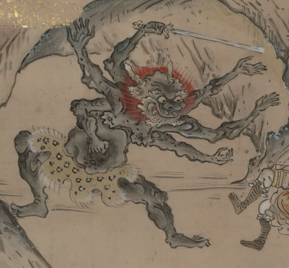

土蜘蛛。肌は浅黒く、頭に長い角を2本生やし、赤い毛を逆立てている。目玉は丸く、口は横に裂け、牙が覗いている。腕は6本生えており、その1つで剣をつかんでいる。毛皮の腰巻きを身につけている。
出典：親書誌：U426_nichibunken_0151：武家はんじょう；ブケハンジョウ／日付：2010／資源識別子：U426_nichibunken_0151_0010_0000
Copyright (c)2010- International Research Center for Japanese Studies, Kyoto, Japan. All rights reserved.